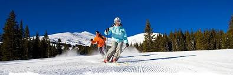

Snow Fever Ski and Board School
Let it snow,let it snow,let it snow
Children's lesssons
Our dedicated Children’s Center makes it easy for parents to enjoy a day on the slopes while professional instructors create a safe, fun, and educational environment that will help develop a lifelong passion for the mountains.
Private lessons
In an effort to create the safest possible experiences for guests and staff alike for the winter 2020-21 season, we are looking at every facet of the ski & snowboard experience through a new lens. This is taking some time, but please rest assured that we will come to market for the upcoming winter with a mix of lesson offerings that strike a great balance of lesson quality and pandemic safety.
Meet the instructors
Annie Savath
Experience: First started teaching in Engelberg, Switzerland. Have been teaching at Telluride, TSG since 1972. Alpine Examiner (Emeritus), Loves to go find the best snow on the mountain, wherever it might be.
Motto: Get involved, leave Telluride better than you found it.
Other interests: hiking, biking, paddle boarding, gourmet cooking, photography, exploring other countries with husband Ro-bear
Insider tip: Be aware, you come to Telluride, life will never be the same.